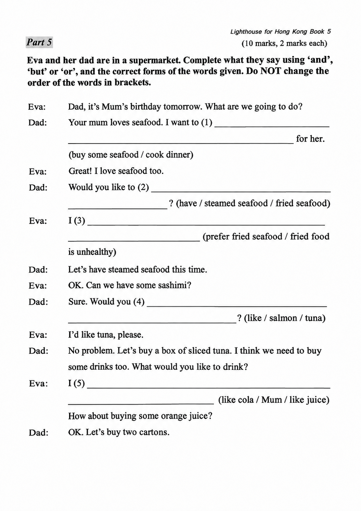
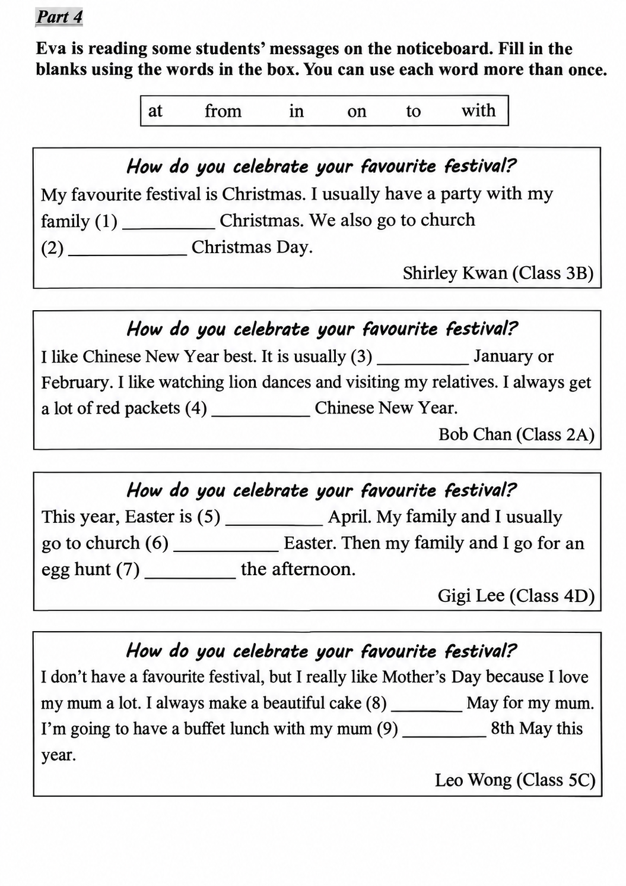
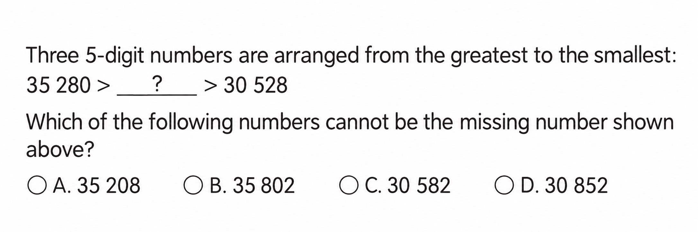

已掌握
| # | 中文意思 | 例句/提示 | 英文默写 | 已掌握 |
|---|---|---|---|---|
| noun 名词 | ||||
| 1 | 标志 | Read the carefully. | ||
| 2 | 模型 | I build a car . | ||
| 3 | 家务 | I help my parents with the . | ||
| 4 | 小鹿 | A is standing near the trees. | ||
| 5 | 周六 | I play football on . | ||
| 6 | 小学生 | The reads a book. | ||
| 7 | 顺序 | Please put them in . | ||
| 8 | 空气 | We need to breathe. | ||
| 9 | 早餐 | I eat at seven. | ||
| 10 | 铁路 | The connects the two towns. | ||
| verb 动词 | ||||
| 11 | 收拾、收纳 | Please your toys. | ||
| 12 | 采摘；挑选 | We apples from the tree. | ||
| phrase 短语 | ||||
| 13 | 留在家里 | We on rainy days. | ||
| 14 | 小学 | My sister goes to . | ||
| 15 | 年龄 | I am seven . | ||
| adjective 形容词 | ||||
| 16 | 著名的 | This is a place. | ||
| 17 | 粗鲁的 | Do not be . | ||
| 18 | 爱干净的 | My brother is and always puts his toys away. | ||
| 19 | 不同的 | Our bags are colours. | ||
| adverb 副词 | ||||
| 20 | 从不 | I run across the road. | ||
| # | 单词/词组 | 中文意思 | 例句/说明 | 已掌握 |
|---|---|---|---|---|
| adjective 形容词 | ||||
| 1 | wrong | The answer is wrong. | ||
| 2 | ugly | I was hairless, toothless and ugly. | ||
| noun 名词 | ||||
| 3 | boxing | Boxing is a sport. | ||
| 4 | photograph | This photograph is beautiful. | ||
| 5 | hamster | The hamster sleeps in its cage. | ||
| 6 | shell | The shell is hard. | ||
| 7 | slide | The child goes down the slide. | ||
| 8 | sculpture | We saw a stone sculpture in the park. | ||
| 9 | flat | We live in a flat. | ||
| 10 | workplace | A school is a teacher's workplace. | ||
| 11 | musician | The musician plays music. | ||
| 12 | farming | Farming provides us with food. | ||
| 13 | stone | I found a smooth stone by the river. | ||
| 14 | culture | We learn about our own culture at school. | ||
| 15 | instrument | Do you want to learn to play an instrument? | ||
| 16 | spaghetti | We had spaghetti with tomato sauce for dinner. | ||
| noun phrase 名词短语 | ||||
| 17 | convenience store | I buy water at the convenience store. | ||
| 18 | Open Day | Open Day is on 1st March. | ||
| 19 | Parents' Day | Parents' Day is on 15th October. | ||
| 20 | a box of chicken wings | May I have a box of chicken wings, please? | ||
| 21 | unit price | The unit price of each apple is two dollars. | ||
| 22 | daily routine | Lester is writing about his daily routine. | ||
| verb 动词 | ||||
| 23 | reduce | We use both sides of the paper to reduce waste. | ||
| 24 | feed | How often do you feed Kitty? | ||
| phrase 短语 | ||||
| 25 | step on | Be careful not to step on the flowers. | ||
| 26 | simple present tense | The sentence "I walk to school" is in the simple present tense. | ||
| verb phrase 动词短语 | ||||
| 27 | take a nap | I take a nap after lunch. | ||
| 28 | watch fireworks | We watch fireworks in Tsim Sha Tsui. | ||
| 29 | throw away | We do not throw away things like clothes, books or toys. | ||
| quantifier 数量限定词 | ||||
| 30 | a few | There are a few hamburgers. | ||
| # | 中文意思 | 例句/提示 | 英文默写 | 已掌握 |
|---|---|---|---|---|
| time/date 时间日期 | ||||
| 1 | 一月 | is the first month. | ||
| 2 | 四月 | is the fourth month. | ||
| 3 | 九月 | is the ninth month. | ||
| 4 | 十二月 | is the twelfth month. | ||
| 5 | 星期日 | is a weekend day. | ||
| numbers 数字 | ||||
| 6 | 2 | is 2. | ||
| 7 | 16 | is 16. | ||
| 8 | 19 | is 19. | ||
| ordinal numbers 序数 | ||||
| 9 | 第三 | This is the shape. | ||
| solid shape 立体图形 | ||||
| 10 | 六棱锥 | A has one hexagonal base and six triangular side faces. | ||
| 11 | 侧面 | A is on the side. | ||
| plane shape 平面图形 | ||||
| 12 | 梯形 | A has exactly one pair of parallel sides. | ||
| 13 | 平行四边形 | A has two pairs of parallel sides. | ||
| geometry 几何 | ||||
| 14 | 邻边 | These are . | ||
| 15 | 锐角 | An is smaller than a right angle. | ||
| # | 单词/词组 | 中文意思 | 例句/说明 | 已掌握 |
|---|---|---|---|---|
| geometry 几何 | ||||
| 1 | angle | An angle is formed by two rays with the same endpoint. | ||
| 2 | perpendicular line | Perpendicular lines meet at a right angle. | ||
| 3 | obtuse angle | An obtuse angle is greater than 90 degrees and less than 180 degrees. | ||
| 4 | grid | A grid helps us find positions. | ||
| 5 | opposite side | In a rectangle, the opposite sides are equal. | ||
| question word 题目词 | ||||
| 6 | compare | We compare two numbers. | ||
| 7 | respectively | Tom and Ben have 2 and 3 books respectively. | ||
| shape 形状 | ||||
| 8 | circle | Draw a circle around the answer. | ||
| comparison 比较 | ||||
| 9 | shortest | Find the shortest line. | ||
| 10 | lightest | The 1 kg bag is the lightest of the 1 kg, 2 kg and 3 kg bags. | ||
| 11 | heaviest | The 3 kg bag is the heaviest of the 1 kg, 2 kg and 3 kg bags. | ||
| position 位置 | ||||
| 12 | back | The desk is at the back of the room. | ||
| 13 | arrow | The arrow points to the right. | ||
| operations calculation 运算 | ||||
| 14 | multiplication | In multiplication, 3 times 4 equals 12. | ||
| 15 | product | The product is the answer in multiplication. | ||
| 16 | equally | Share the apples equally. | ||
| 17 | divide A by B | Divide A by B. | ||
| teacher math vocabulary 老师数学词汇 | ||||
| 18 | each | Each child has three pencils. | ||
| currency money 货币 | ||||
| 19 | pay for | I pay for the book. | ||
| 20 | expensive | This toy costs $50. It is more expensive than the $20 toy. | ||
| measurement 测量 | ||||
| 21 | measure | We measure the length with a ruler. | ||
| 22 | balance | We use a balance to compare the weights of two objects. | ||
| 23 | width | The rectangle has a length of 8 cm and a width of 5 cm. | ||
| data charts 统计图 | ||||
| 24 | block chart | Read the block chart. | ||
| 句型结构 | ||||
| 25 | Angle ... is smaller than Angle ... | Angle A is smaller than Angle B. | ||
| 26 | Angle ... is the smallest. | Angle B is the smallest. | ||
| 27 | The lines are perpendicular to each other. | The lines are perpendicular to each other. | ||
| 28 | ... is to the east of ... | The school is to the east of the park. | ||
| 29 | ... is to the west of ... | The bank is to the west of the school. | ||
| plane shape 平面图形 | ||||
| 30 | upper base | The upper base of this trapezium is 4 cm long. | ||



